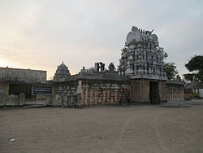

THIRUKOILUR
VEERATESHWARAR TEMPLE

It is also called thirukoilur veeratam.
It is constructed in dravidian style of architecture during cholas period.
The temple covers nearly 5 acres near Thenpennai river.